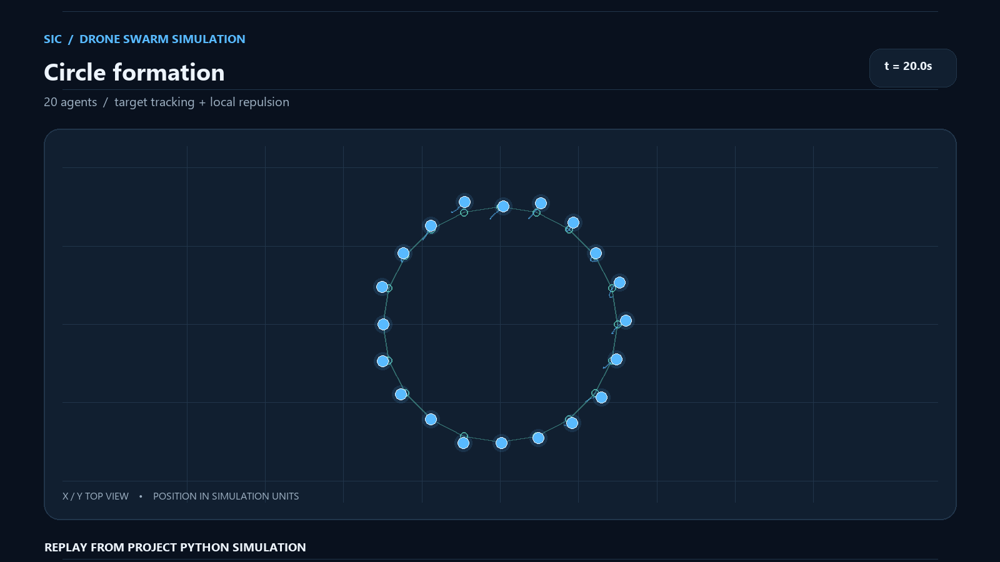
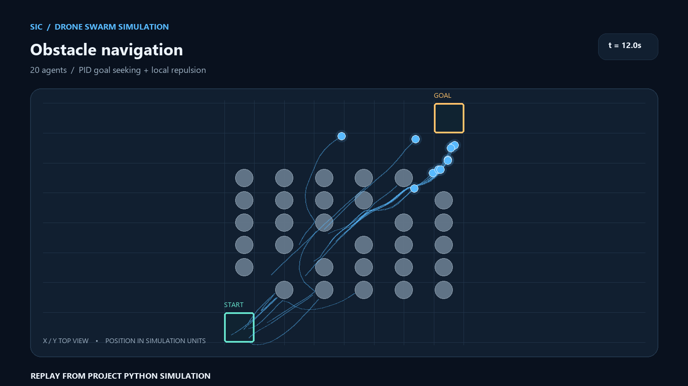
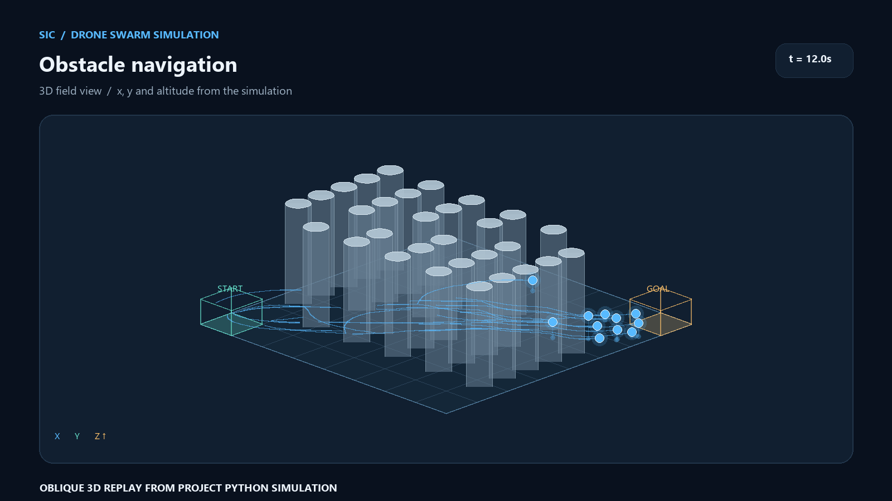

A swarm of simple decisions.
A Python simulator for exploring how virtual drones arrange themselves and navigate obstacles.
We built an interactive 3D environment with two modes: move agents into geometric patterns, or guide them toward a goal through a field of pillars.

A course project with an aerospace question
What can we learn from a group of small agents?
The Samsung Innovation Campus programming course gave us a chance to build something beyond individual Python exercises. Our capstone explored a simplified multi-agent problem: how to coordinate a group of virtual drones without scripting every movement by hand.
The work is a software simulation. It does not represent a flight test, a validated aircraft controller or autonomous operation of physical drones.
Assign points in a line, circle, square, star, triangle, “1” or “S” and watch agents move toward them.
Move from a start region toward an end region while responding to other agents and cylindrical obstacles.
Objects, controls and a visible world
A small simulation built from clear parts.
The Python implementation separates individual agent state, swarm-level setup, obstacle geometry and the desktop interface. NumPy handles vector calculations; Tkinter and Matplotlib provide controls and a live 3D plot.
Local motion
Tracks position, velocity and target. A PD-style force moves each agent toward its assigned formation point.
Shared scenario
Creates agents, assigns pattern targets and manages the obstacle field, run timing and outcomes.
Static obstacles
Represents each cylindrical obstruction and supplies its size and position for avoidance checks.
Live controls
Lets a user select modes and patterns, change the agent count, adjust PID gains and control simulation speed.
Pattern mode uses target tracking plus local repulsion. Navigation mode uses PID goal seeking plus repulsion from nearby drones and pillars. The display updates as the agents move.
Two ways to observe the same swarm
Shape the group. Then give it a route.
From scattered points to a shared shape.
Each agent receives a target in the selected formation. The update loop applies a proportional–derivative tracking force and short-range repulsion so the dots move toward the pattern while responding to near neighbours.

A destination beyond a field of pillars.
Agents begin in a start box and head toward an end box. The simulation combines a tunable PID goal force with local repulsion. The GUI can report how many agents reached the destination, how many were eliminated and their average arrival time.


A working learning environment
The useful result was a system we could inspect and change.
The project produced a selectable set of formations, a configurable obstacle scenario and a 3D view that makes the agents' motion visible. Its run summary records outcomes for a chosen obstacle scenario; the project files do not establish a single general success rate.
Seven shapes give the team different ways to observe how assignment and tracking affect group motion.
Start and end regions, static pillars and configurable gains make the navigation mode repeatable in the interface.
The code calculates cohesion and alignment terms, but its current motion update uses repulsion without adding those terms. Integrating them and comparing runs would be a useful next iteration.
This is a software demonstration of control and swarm concepts. It does not include physical drone tests or quantitative validation against real flight data.
Built together during Samsung Innovation Campus.
Capstone project by Anup Bajgain, Madhusudan Pun and Toran Bahadur Niroula, prepared in May 2025. The work brought Python programming, object-oriented design, numerical calculations and visualization into one shared project.